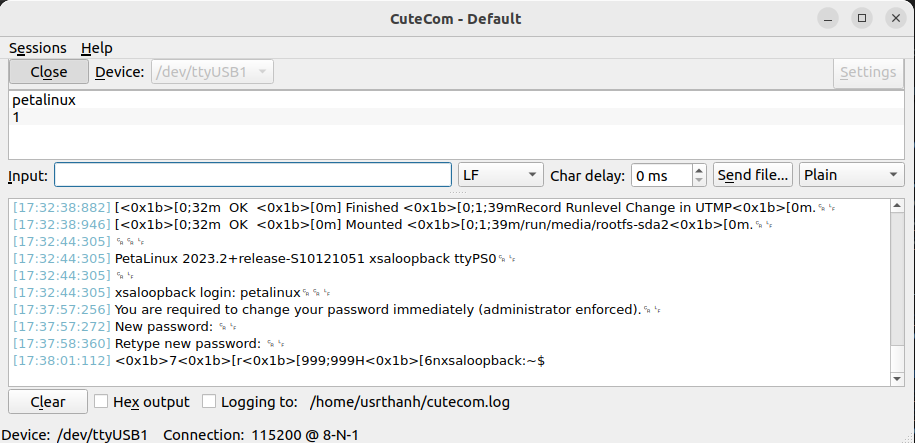

Chuong I: Build Linux su dung Petalinux tool len Kria Kd240 theo AMD Xilinx
Trong Manual nay se huong dan steps by steps cach su dung Petalinux Tools cai dat Linux len FPGA SoC Kria KD240.
Trong moi steps se co giai thich ngan gon ve lenh duoc su dung
Bước 1
1
Thay doi shell
sudo dpkg-reconfigure dash: dash mac dinh dung Ubuntu, con bash dung trong Petalinhx, Yocto, Mmake.
No se hien Install dash as /bin/sh? Yes or No: Chon No de su dung bash nham giup Petalinux chay it loi hon .
sudo dpkg-reconfigure dash
Bước 2
2
Download Petalinux Tools
Petalinux Tools
chon nam va chon tai Petalinux Tools. File tai ve se co dang petalinux-v2023.2-10121855-installer.run
Note: Lua chon ban Peatalinux Tools cung can danh gia theo ban Vivado, cung nhu he dieu hanh Ubuntu.
Bước 4
3
Tao folder & Giai nen
Tao folder AMD_KD240 va dua file petalinux-v2023.2-10121855-installer.run trong Buoc 2 vao folder AMD_KD240.
# Tao folder AMD_KD240mkdir AMD_KD240cd ~/AMD_KD240# Dua file Petalinux Tools vao folder AMD_KD240mv ~/Downloads/petalinux-v2023.2-10121855-installer.run /AMD_KD240/# Giai nen petalinux-v2023.2-10121855-installer.run vao folder petalinux_tools# petalinux_tools se la file chay moi truong cho Petalinux Tools./petalinux-v2023.2-10121855-installer.run --dir petalinux_tools# Nhap Enter de xem license agreements# Nhap y de dong y roi q de thoat (tuong tu voi cac license hien ra)# Noi dung petailux_tool# Chay moi truong Petalinux Tools source ./settings.sh
Note: Trong suot qua trinh ve sau cua build project su dung Petalinux Tools deu
phai duoc chay trong terminal chua moi truong Petalinux Tools da duoc kich hoat bang lenh source ./settings.sh.
Bước 4
4
Tao folder project
Dung lenh cd de quay tro lai folder AMD_KD240 neu ban dang o trong folder petalinux_tools.
Tao folder AMD_KD240 va dua file petalinux-v2023.2-10121855-installer.run trong Buoc 2 vao folder AMD_KD240.
# cd ra khoi petalinux_toolscd ..# Tao folder projects trong folder me AMD_KD240# Trong day se chua cac folder du anmkdir projects
Note: Lua chon ban Peatalinux Tools cung can danh gia theo ban Vivado, cung nhu he dieu hanh Ubuntu.
Bước 5
5
Trich xuat Hardware (.xsa) file
Mo Vivado, sau khi chay xong bitstream, chon File -> Export -> Export Hardware
Gia su file duoc tao co ten la design_1_wrapper.xsa
Tim file .xsa do trong folder du an Vivado va copy vao trong folder /AMD_KD240/projects
Note: Can xac dinh dung SD Card cua Kria KD240 qua Schematic de viec bootign du lieu thanh cong (quan trong).
Bước 6
6
Tao du an su dung .xsa
Su dung petalinux-create -t project nham tao du an su dung chip zynqMP
Trong do zynqMP la vi Kria KD240 su dung Zynq UltraScale+ MPSoC.
# Chuyen den folder chua projectcd /home/usrthanh/data/AMD_KD240/projects# Tao du an Petalinux voi chip zynqMPpetalinux-create -t project -n kd240_xsa --template zynqMP# Vao trong du an kd240_xsacd kd240_xsa# Tao du an va chay config voi file .xsapetalinux-config --get-hw-description=/home/usrthanh/data/AMD_KD240/projects
Neu chay thanh cong lenh tren se mo giao dien petalinux-config.
Chon Save xong Exit de luu cau hinh va thoat khoi giao dien.
Chi tiet con fig se duoc neu trong Sheet.
Note: Kiem tra mang de dam bao ket noi internet on dinh trong qua trinh build.
Bước 7
7
Cau hinh u-boot
Chay lenh petalinux-config -c u-boot nham cau hinh U-Boot khoi dong he thong.
Chi tiet config u-boot se duoc neu trong Sheet.
Qua trinh build se mat khoang 10-15 phut tuy vao cau hinh may tinh cua ban cung nhu wifi.
# Cau hinh u-bootpetalinux-config -c u-boot # Chon Boot options bang nut Space # Chon Boot media bang nut Space # Chon Support for booting from SD/EMMC nham de boot he dieu hanh len Kria KD240 qua the SD card (su dung Space hoac y(yes), an n(no))# Ket qua chay config u-boot se nhu sau:[INFO] Sourcing buildtools[INFO] Silentconfig project[INFO] Silentconfig rootfs[INFO] Generating workspace directory[INFO] Configuring: u-boot[INFO] bitbake virtual/bootloader -c menuconfigNOTE: Started PRServer with DBfile: /AMD_KD240/projects/kd240_xsa/build/cache/prserv.sqlite3, Address: 127.0.0.1:36755, PID: 22177....................................[INFO] Successfully configured u-boot
Note: Kiem tra mang de dam bao ket noi internet on dinh trong qua trinh build.
Bước 8
8
Cau hinh kernel
Chay lenh petalinux-config -c kernel nham cau hinh Kernel.
Chi tiet config kernel se duoc neu trong Sheet.
Qua trinh config kernel se mat khoang 10-15 phut tuy vao cau hinh may tinh cua ban cung nhu wifi.
# Cau hinh kernelpetalinux-config -c kernel # Ket qua chay config u-boot se nhu sau:[INFO] Sourcing buildtools[INFO] Silentconfig project[INFO] Silentconfig rootfs[INFO] Generating workspace directory[INFO] Configuring: kernel[INFO] bitbake virtual/kernel -c cleansstate....................................[INFO] Successfully configured kernel
Note: Kiem tra mang de dam bao ket noi internet on dinh trong qua trinh build.
Bước 9
9
Cau hinh rootfs
Chay lenh petalinux-rootfs nham cau hinh RootFS.
Chi tiet config rootfs se duoc neu trong Sheet.
Qua trinh build se mat khoang 10-15 phut tuy vao cau hinh may tinh cua ban cung nhu wifi.
# Cau hinh rootfspetalinux-config -c rootfs# Ket qua build se nhu sau:[INFO] Sourcing buildtools[INFO] Silentconfig project[INFO] Generating plnxtool conf file[INFO] Successfully configured rootfs
Note: Kiem tra mang de dam bao ket noi internet on dinh trong qua trinh build.
Bước 10
10
Build toan bo du an
Chay lenh petalinux-build de build toan bo he thong Linux.
Qua trinh build se mat khoang 30-45 phut tuy vao cau hinh may tinh cua ban cung nhu wifi.
Sau khi build xong, se co /images/linux nam trong du an kd240_xsa chua cac file can thiet de nap Linux len Kria KD240.
# Ket qua build se nhu sau: [INFO] Sourcing buildtools[INFO] Building project[INFO] Silentconfig project[INFO] Silentconfig rootfs[INFO] Generating workspace directoryINFO: bitbake petalinux-image-minimalNOTE: Started PRServer with DBfile: /AMD_KD240/projects/kd240_xsa/build/cache/prserv.sqlite3.......................................[INFO] Successfully built project
Note: Neu ban muon build lai du an sau khi da thay doi cau hinh chi can chay lai lenh petalinux-build.
Ngoai ra nho Kiem tra mangde dam bao ket noi internet on dinh trong qua trinh build.
Chuong II: Chuan bi nap du lieu vao SD Card
Day la phan ke tiep cua Chuong I sau khi da build toan bo du an. Tai day se huong dan \
chuan bi cho nap du lieu vao the SD Card nham boot he dieu hanh len Kria KD240.
Bước 1
1
Chuan bi the SD Card
Su dung the SD Card (kem ADAPTER neu co) co dung luong it nhat 16GB, tot nhat la 32GB de dam bao du lieu du de nap he dieu hanh.
Su dung dau doc de ket noi the SD Card qua chan USB voi may tinh.
Hai hinh duoi day minh hoa the SD Card, ADAPTER va dau doc the SD Card chan USB.
Note: Nen su dung 1 ternminal khac so voi terminal trong Chuong I nham
lam ro rang cac Chuong.
Bước 2
2
Kiem tra phan vung
Su dung lsblk nham xem cac phan vung cua may tinh.
# Kiem tra lsblk lsblk # Ket qua hien ra cac phan vung tren may tinh# Trong do the nho SD Card 32GB nam o sda vi no ghi 29,7Gb
Bước 3
3
Umout the SD card
Buoc nay co nhiem vu bo sung. Viec umount de nham dam bao khong co loi xay ra trong toan bo qua trinh xoa noi dung cung nhu format + label cac vung.
# Thao (umount) /dev/sda nham thao tac khong bi loisudo umount /dev/sda # Xoa toan bo signature cua filesystem tren the SD nham dam bao no nhu 1 the SD moisudo wipefs -a /dev/sda
Note: Muon thao tac format + label the SD card thi nen umount truoc de tranh loi.
Bước 4
4
Tao phan vung 1 cho /BOOT
Tai tien ich fdisk tao phan vung 1 cho /BOOT tren the SD Card.
# 1. Chon n (tao 1 phan vung moi) # 2. Chon p (phan vung chinh - Primary Partition) # 3. 1 (Lay vi tri phan vung thu 1 cho /BOOT)# 4. Enter (Dung sector bat dau mac dinh cai 1)# 5. +1G (Lay kich thuoc cho phan vung BOOT) # 6. Y (Yes - Xac nhan)# 7. w (Luu thay doi) cho ca phan vung /BOOT hoac doi den khi tao xong phan vung /rootfs
Note: Sau khi tao xong 1 phan vung, co the an w luon de luu thay doi va thoat khoi fdisk. Hoac tao tiep phan vung /rootfs roi moi w de luu.
Bước 5
5
Tao phan vung 2 cho /rootfs
Sau khi tao xong phan vung 1 cho /BOOT.
Nguoi dung van dang o trong tien ich fdisk, tien hanh tao phan vung 2 cho /rootfs tren the SD Card.
# 1. Chon n (tao 1 phan vung moi) # 2. Chon p (chon tao 1 phan vung chinh - Primary Partition) # 3. 2 (Lay vi tri phan vung thu 2 vi 1 cua /BOOT)# 4. Enter (Dung sector bat dau mac dinh vi no da nam sau phan vung 1 cua /BOOT)# 5. Enter (kích thước cho /rootfs) # 6. Y (Yes - Xac nhan)# 7. w (Luu thay doi) cho ca phan vung /BOOT va /rootfs
Note: Sau khi tao xong 1 phan vung, co the an w luon de luu thay doi va thoat khoi fdisk. Hoac tao tiep phan vung /rootfs roi moi w de luu.
Bước 6
6
Dinh dang phan vung 1 va 2
Sau khi tao xong phan vung 1 va 2 tren the SD Card (Buoc 4 va 5). Ta co anh nhu sau:
Tiep theo, tien hanh dinh dang (format), dan nhan cho 2 phan vung vua tao. Trong do:
Phan vung 1 se duoc dinh dang FAT32 va dan nhan la BOOT.
Phan vung 2 se duoc dinh dang ext4 va dan nhan la rootfs.
# Format va dan nhan BOOT sudo mkfs.vfat -F32 /dev/sda1 -n BOOT# Format va dan nhan rootfs sudo mkfs.ext4 /dev/sda2 -L rootfs
Note: Label (ten nhan) phan vung BOOT can viet hoa va rootfs viet thuong de he dieu hanh co the nhan dang dung.
Labels rat quan trong viec nap he dieu hanh len Kria KD240. Khong de sai ten.
Bước 7
7
Kiem tra format va label
Sau khi format va label o Buoc 6, su dung lai lsblk -f de kiem tra lai format va label.
# Kiem tra format va labellsblk -f# Ket qua# sda1: vfat - BOOT# sda2: ext4 - rootfs
Note: Kiem tra format va label de dam bao khong co loi xay ra trong qua trinh nap he dieu hanh len Kria KD240.
Bước 8
8
Tao mount point cho 2 phan vung
Sau khi kiem tra format va label o Buoc 9, tien hanh tao mount point cho 2 phan vung.
Nham chuan bi cho viec copy cac file he dieu hanh vao trong 2 phan vung do.
sudo mkdir -p /media/usrthanh/BOOT: Tao mount point cho phan vung label /BOOT.
sudo mkdir -p /media/usrthanh/rootfs: Tao mount point cho phan vung label /rootfs.
# Tao mount point cho phan vung 1sudo mkdir -p /media/usrthanh/BOOT# Tao mount point cho phan vung 2sudo mkdir -p /media/usrthanh/rootfs# Ket qua tao mount point nhu sau:
Note: Thay usrthanh bang ten nguoi dung (username) tren may tinh cua ban.
Bước 9
9
Mount point cho 2 phan vung
sudo mount /dev/sda1 /media/usrthanh/BOOT: Mount point cho phan vung label /BOOT.
sudo mount /dev/sda1 /media/usrthanh/rootfs: Mount point cho phan vung label /rootfs.
# Mount point cho phan vung 1 (BOOT)sudo mount /dev/sda1 /media/usrthanh/BOOT# Mount point cho phan vung 2 (rootfs)sudo mount /dev/sda2 /media/usrthanh/rootfs# Ket qua mount point nhu sau:
Note: Thay usrthanh bang ten nguoi dung (username) tren may tinh cua ban.
Chuong III: Dua du lieu vao /BOOT va /rootfs
Day la chuong ke tiep cua Chuong II sau khi da chuan bi xong the SD Card. Tai day se huong dan
dua du lieu vao 2 phan vung /BOOT va /rootfs tren the SD Card nham boot he dieu hanh len Kria KD240.
Mo ta ve /BOOT va /rootfs xem o Buoc 4 Chuong II.
Bước 1
1
Bo sung BOOT.BIN
Trong Chuong I, sau khi build xong du an Petalinux, cac file can thiet de nap he dieu hanh se nam trong folder /images/linux cua du an kd240_xsa.
# Tao BOOT.BINpetalinux-package --boot --fsbl /{home}/images/linux/zynqmp_fsbl.elf --u-boot images/linux/u-boot.elf --fpga images/linux/system.bit # Ket qua nhu sau:anh BOOT.BIN
Bước 2
2
Copy noi dung vao /BOOT
Trong BOOT copy 3 file BOOT.BIN, image.ub va boot.scr
Nhung sau khi build (Buoc 10 Chuong I), cac file nhu boot.scr, image.ub deu nam cung 1 folder /images/linux trong du an kd240_xsa.
Trong khi do BOOT.BIN khong duoc tu tao ra ma no can qua lenh petalinux-package ben duoi roi moi copy 3 file nay vao phan vung /BOOT tren the SD Card.
Note: {home} thay bang ten duong dan den thu muc AMD_KD240 tren may tinh cua ban.
Bước 3
3
Copy noi dung vao /rootfs
Trong rootfs giai nen toan bo noi dung file rootfs.tar.gz (nam trong /images/linux) vao phan vung /rootfs tren the SD Card.
# Giai nen rootfs.tar.gz de lay ra duoc cac file he thongsudo tar -xvf ~/Downloads/AMD_KD240/projects/kd240_xsa/images/linux/rootfs.tar.gz -C /media/usrthanh/rootfs1/
Note: {home} thay bang ten duong dan den thu muc AMD_KD240 tren may tinh cua ban.
Bước 4
4
Umount 2 phan vung /BOOT va /rootfs
Trong buoc nay se umount 2 phan vung /BOOT va /rootfs tren the SD Card de chuan bi cho viec boot he dieu hanh len Kria KD240.
Sau khi umount xong co the thao the SD Card ra khoi may tinh
Note: Thay usrthanh bang ten nguoi dung (username) tren may tinh cua ban.
Chuong IV: Booting Kria KD240
Da la Chuong cuoi cung trong loat chuong huong dan nap he dieu hanh len Kria KD240. Tai day se huong dan
boot he dieu hanh tu the SD Card vua duoc nap du lieu o Chuong II va III len Kria KD240.
Bước 1
1
Cai dat Cutecom
Su dung cutecom de ket noi voi Kria KD240 qua cong UART.
# Tai ve danh sach phien ban va thong tin moi nhat cua cac goi # Cap nhat co so du lieu goi o may bansudo apt update # Cai dat cutecom sudo apt install cutecom
Bước 2
2
Chinh setting cho Cutecom
Trong buoc nay se chinh setting cho Cutecom de ket noi voi Kria KD240 qua cong UART.
Vi du minh hoa ve setting cho Cutecom nhu hinh ben duoi:
Sau khi chinh xong setting, an nut Open de mo ket noi voi Kria KD240.
Bước 3
3
Booting Linux su dung Petalinux
Sau Chuong II, khi da co the SD 2 phan vung /BOOT va /rootfs da duoc nap du lieu he dieu hanh.
Tien hanh dua the SD Card vao Kria KD240 de boot he dieu hanh the cac buoc sau:
1. Tat nguon Kria KD240.
2. Cam the SD Card vao khe SD tren Kria KD240.
3. Ket noi Kria KD240 voi may tinh qua cong micro USB - USB (Cong UART).
4. Cau hinh Cutecom tren may tinh nhu o buoc 2 Chuong IV roi an Open de bat dau doi.
5. Cam day nguon cho Kria KD240.
6. Mat tam 30 giay de he dieu hanh Linux boot tu dau den cuoi nhu 2 hinh duoi:
Bat dau tu 1 so thong diep boot:Ket thuc voi thong diep dang nhap:
7. Dang nhap he dieu hanh Linux tren Kria KD240 (su dung input de dien) :
Username: petalinux (Username mac dinh la petalinhx)
Password duoc tuy chinh

8. Vi du:
Username: petalinux
Password: 1
Retype password: 1
9. Ket thuc cac buoc tren ban da co the dang nhap thanh cong he dieu hanh Linux tren Kria KD240. Chuc cac ban thanh cong.